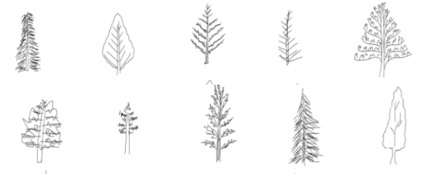

specifically for the workshop, bear with general purpose representation scenarios _not_ focusing on instances that have visually grounded pairs; our end goal is to derive a good representation for _any_ sentence, even those without visual counterparts (e.g., _"democracy should be abolished."_) so ground with vision during training, test on all sentences. another point is to generate negative samples, both for weak grounding and actual grounding. so weak grounding has an image instance with a caption and non-caption pair, actual grounding has an (image instance, sentence, boolean) denoting correspondence of image to sentence. (note that the label does not even need to be used, but may help as another objective/task to try?) what kiela et. al. focuses on are three objectives: 1. try to predict image features i.e., map the caption to the same space as image features for the correct image. can also learn a mapping from sentence embedding to image embedding (some pretrained cnn), use cosine embedding loss (but this is not differentiable?) and softmax some similarity score to get a classification. so metric=accuracy i.e., how many sentences can be mapped to correct images. 2. try to predict other captions i.e., rank sentences for an image (no explanation in the paper?). this can also be done as pairwise classification (encode with attention or otherwise) and classify as same image or not. 3. try to jointly predict both.
